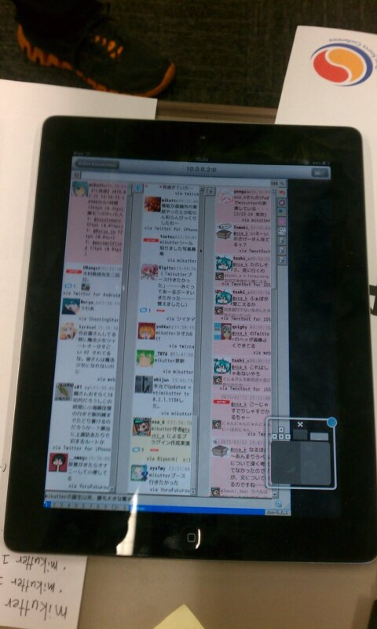

日記 - 2013-02
2013-02-23
OSC2013 Tokyo 2日目
今日は問題解いてない．
OSC2013 Tokyo 2日目． 展示内容自体は昨日とほぼ同じ．
iPadでmikutterを動かすのは，ThinkpadとiPadを無線LANのAd-Hocモードで繋いで， iPadからThinkpadにSSHすることで高速化を図りました．
結果，朝はそれなりにうまく行きました(カクカクだけど iPadからツイートできる程度 にはレスポンス早かった)． ただ，昼過ぎになって人が増えてくると野良APを持ってる人が多くなった影響か， 会場の無線もAd-Hocの無線も弱くなってしまい，あまり動かなくなってしまいました．

展示の図． これを見て質問してきた人に「iPadでもがんばってRubyとGTKを実装すればmikutterが動くんです」とか適当なことを言い， 反応を見てからネタばらしして遊んでました． どうでもいいけど，iPadは黒い上に光沢があるのでうまく写真を撮るのが難しいですね．
OSC初参加にして展示側でしたが，ブースには結構mikutterユーザも来てくれて，いろいろ話せて楽しかったです． 次はもっと練ったネタを用意しておきたいですね．
あと，展示とは関係ない ＆ 昨日の話ですが，懇親会でのじゃんけん大会でSun microsystemsロゴ入りのハローキティぬいぐるみをもらいました．

家宝にします．
2013-02-22
OSC2013 Tokyo
POJ 3705解いた(2日くらい前に)．
http://www.ospn.jp/osc2013-spring/ で，@Phenomer さんを中心にしてmikutterユーザ会として出展してます． 今日のところは
- mikutter展示
- iPadでmikutter(X Forwarding)
- OpenBlocksからiSCSIでmikutter入りDebianをブート
- mikutter Live DVD配布
- mikutterシール配布
とかをやってました．
iPadでmikutterはなんも用意してなかった自分が唐突に思いついてやってみたものです． さくらVPSにmikutter本体を置いてましたが，回線が遅くて激重でまともに動きませんでした． 帰る途中でちょっと改善方法を思いついたので，明日はちょっとまともになってる……かも？
明日も明星大学28号館の305号室で展示してるので，暇な人はどうぞ．
2013-02-18
なんもしてない
今日は問題解いてない．
昼まで寝てて，バイトで6時間くらいコード書いて，夜帰ってくる，と家でコード書く気力が消えますね……．
単に朝早く起きれば良いという説はある，けど……．
2013-02-17
あずにゃん再凍結
今日は問題解いてない．
@nakano_aznyan がまた凍結されてました． やはり挨拶を返しまくるのがまずいのか，それともAPI叩きすぎか……
一応凍結解除してくれメールは送ったけど，根本的に改善しないとまた同じ事の繰り返しになってしまうので， いい機会だし1から書き直すことにしました． UserStreamでTLを見るのと，mikutterにヒントを得た，イベントドリブンによるツイートの処理， あと前回挫折したDSLによる反応定義を作る予定で，今日はその雛形を書いていました．
他のことやるつもりだったんだけどなぁ． まあコード書いてるのは変わらんしいいか．
2013-02-16
貯金切り崩しモード
今日は問題解いてない．
新しくPCを購入することにしました． BTOで7万くらい(OS無し)のデスクトップ．
なんでノートじゃないかというと，単に最近のThinkpadがいまいち惹かれないからです． 高い割にスペックは微妙だし，キーボードもなんか変わってしまったし． ちょうどいい機会なので，Core i7でグラボも積んだマシンを持っておこうかなという感じです．
さっき注文を出したので，入金して届くまで1週間くらいでしょうか．楽しみ．
この他にも色々と買いたいもの，やりたいことがあるので貯金がどんどん消費される予定です……． おかねほしい．
2013-02-15
卒研発表終了
POJ 3042解いた．
すでに昨日の話ですが，卒研発表が終わりました． なんだかんだで卒論に時間を食われていたけど，これでやっと自由になれる……！ とは言いつつもまだ学会発表があるのですが． とりあえず一息ということで．
2013-02-05
卒論提出
明日で卒論提出なので一段落． まだ学会に出す原稿と発表があるけど……．
ということで，前から気になってた映画 LOOPER を観てきました． 感想 ．ネタバレを大量に含みます．